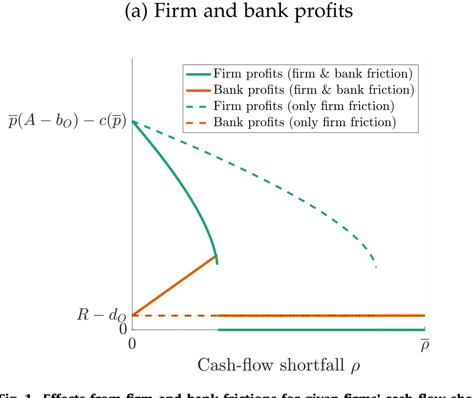
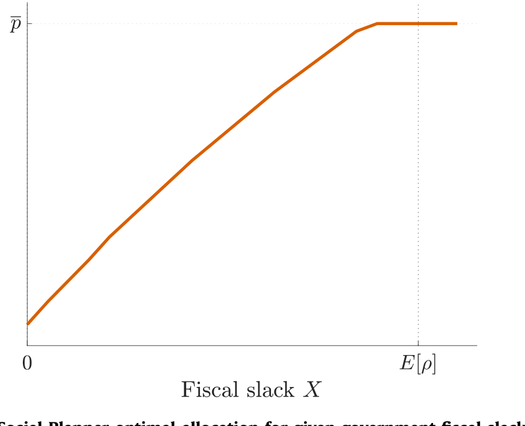
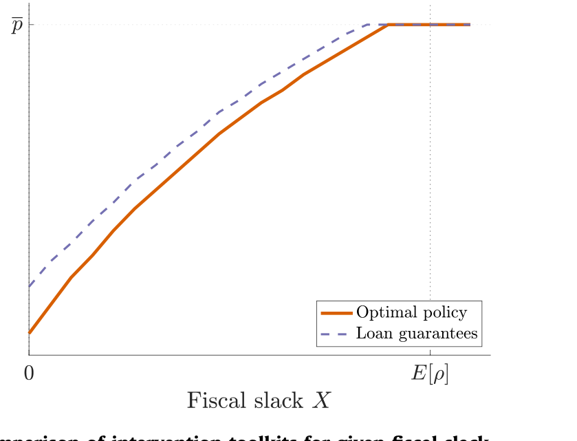
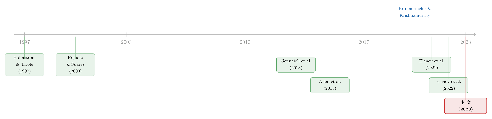

灾难之后，谁该被「救」？——一个把企业、银行与财政三方串起来的最优救助模型
本文读的是 Segura & Villacorta (2023, Journal of Financial Economics)：一场罕见灾难（比如新冠封城）给企业带来高度异质的现金流缺口，而企业的道德风险与银行的资本约束会彼此「放大」，把一个本来只是流动性的问题，变成把正净现值企业也逼到清算的偿付能力问题。论文证明，最优救助不是「见企业就发钱」，而是对企业做差异化转移支付，再叠加通过放松银行资本要求 + 政府持有银行优先股来提供「总量风险保险」。以此为尺子去量新冠期间各国真实用过的工具，作者指出：被广泛使用的贷款担保其实是次优的。
1 引言：一笔「该不该花」的天文数字
先抛一个数字让你坐稳：新冠疫情期间，一些发达经济体为了托住企业，财政支出的规模一度高达 GDP 的 40%（IMF, 2021；Kose et al., 2021）。如果再算上各种或有负债（担保一旦被触发的潜在赔付），真实的账单可能更高。
这笔钱花得值不值，是另一个问题。但有一件事是确定的：当时几乎没有人停下来问——这是不是「最省钱」的救法？ 大家观察到的政策无非两类：一类是直接给企业转移支付（transfers），按封城造成的经济冲击大小发钱；另一类是对新增银行贷款提供担保（loan guarantees），借银行的手去托企业。这两样东西，几乎成了全球的「标准操作」。
可是，标准操作就一定是对的吗？
这正是 Segura 和 Villacorta 这篇论文想回答的。它的问题听上去很「政策」，但内核其实非常「理论」：一场制造了异质现金流缺口的罕见灾难之后，政府支持企业的最优方式到底长什么样？银行作为中间人，在里面到底该扮演什么角色？这些干预又该如何融资、政府要不要为自己的付出索取一点「补偿」？
要把这件事讲清楚，作者搭了一个看似简单、却把企业—银行—政府三方第一次串在一起的模型。下面我们就顺着它的逻辑，一步步走。
2 故事的张力：两个摩擦，如何「狼狈为奸」
首先，得理解灾难到底打在了哪里。
论文刻画的灾难有两个特征：其一，它在 t=0 这一刻砸出高度异质、且与企业长期生死无关的现金流缺口——有的企业只是被划破一点皮，有的却命悬一线，但伤口的深浅，和这家企业未来值不值得活下去，几乎不相关；其二，它抬高了未来的总量不确定性（aggregate uncertainty）。这两点，正是 Hanson et al. (2020) 总结新冠冲击区别于普通衰退的关键特征。
接着，一个自然的问题是：企业要活下去就得借新钱，谁来借？小企业只能找银行。可问题恰恰出在「借钱」这个动作本身会触发两个互相加强的摩擦。
第一个摩擦在企业一侧——道德风险（moral hazard）。 企业家的努力不可观测，而努力决定了项目的成功概率。一旦企业为了续命背上更重的债，它在项目里的「切身利益（skin-in-the-game）」就被稀释了：努力的好处有一大块要拿去还债，于是它干脆少使劲，产出随之下降。换句话说，债务一加重，企业的产出就缩水——这也正是 Myers (1977) 笔下债务积压（debt overhang）问题的另一种表达。
第二个摩擦在银行一侧——资本约束（capital requirement）。 在灾难里，手握闲钱的投资者对安全有一种「绝对偏好」，只肯买无风险的东西，比如有存款保险兜底的银行存款。于是银行只能靠受保存款融资，而监管又规定：存款不能超过其贷款组合价值的某个比例。这个杠杆上限，加上银行分散了企业的特质风险，意味着银行只有在足够糟糕的总量冲击下才会违约，从而把存款保险的成本压在一个有限范围内。
然后，真正关键的一步来了：这两个摩擦不是各管各的，而是会彼此放大。
为什么？因为银行要满足监管约束，就需要自己的股权（equity）作为缓冲去吸收损失。而银行股权的来源，是它放贷赚到的「贷款租金（lending rents）」。可银行多赚的这块股权，恰恰是从企业身上「抽」走的——企业为了拿到融资，必须把未来的一部分收益让渡给银行。于是企业股权下降、切身利益被进一步稀释、道德风险更严重、产出进一步下滑……初始损失就这样在「企业—银行链条（firm-bank linkages）」上被一轮轮放大。
于是反转出现了：对那些受灾最重的企业，两个摩擦交织在一起，会直接冻结新融资的流动——哪怕这家企业项目的净现值（NPV）明明是正的，它也会被清算。一个本该是「流动性」的问题，被生生拖成了「偿付能力」的问题。

Figure 1: Effects from firm and bank frictions for given firms’ cash-flow
如图 1 所示，作者把企业摩擦和银行摩擦放在一起，刻画了在给定现金流缺口下，损失是如何被放大的：缺口越大的企业，越容易掉进那个「明明有救、却没人敢救」的死亡区间。
3 模型：把三方的资产负债表写进同一张纸
这是一篇模型论文，最值得花笔墨的，正是它的设定与那一步最关键的推导。我们慢慢来。
3.1 四类玩家
经济体只有两期 t=0,1，所有人贴现率为零，有四类参与者：
- 投资者（investors）：有「深口袋」，但无限风险厌恶。作者沿用 Gennaioli et al. (2013) 的刻画方式，假设投资者只从最坏情形下的消费中获得效用。形式上，对
t=1的一组状态 \(\Omega\)，无限风险厌恶者从随机消费 \((c_1(\omega))_{\omega\in\Omega}\) 中得到的效用为
$$U \equiv \min_{\omega\in\Omega}\; c_0 + c_1(\omega).$$
这条「取最小值」的效用，逼出了一个干净的结论：他们只买无风险资产（如受保存款）。这正是灾难里「人人抢安全资产」的数学化身。
- 企业（firms）：连续统、测度为 1。每家企业手里有一个风险项目，外加一笔到期日为
t=1、承诺额为 \(b_O>0\) 的旧贷款。 - 银行（banks）：测度为 \(\bar\rho\)，按 \(\rho\) 编号，银行 \(\rho\) 专门给 \(\rho\) 类型的企业放贷。它只能靠受保存款融资，且受杠杆上限约束。
- 政府（government）：制定政策，但每多发一单位公债都要付出凸的（convex）死重成本——这一点后面至关重要。
3.2 灾难与企业类型
灾难在 t=0 给每家企业砸出一个现金流缺口 \(\rho\in[0,\bar\rho]\)，称为企业类型，密度 \(h(\rho)>0\)。企业若续命成功，t=1 的支付为 \(A>0\)；失败则为零。成功概率 \(p\) 恰好等于企业在 t=0 付出的不可观测努力，\(p\in[0,\bar p]\)，努力的私人成本为 \(e(p)\)。
关于成本函数，作者给了一组技术性假设（Assumption 1）：
$$e(0)=0,\quad e'(0)=0,\quad e'(\bar p)=A-\eta,\quad e''(0)>0,\quad e''(\bar p)>\eta/\bar p,\quad e'''(p)\ge 0.$$
这些假设保证了一件直觉上的事：在没有债务扭曲时，社会最优的努力就是把「期望产出」最大化的那个上界 \(\bar p\)：
$$\bar p = \arg\max_{p\in[0,\bar p]}\;\{\,pA - e(p)\,\}. \tag{1}$$
3.3 道德风险：整篇论文的「发动机」
但企业并不会替社会最大化产出。它最大化的是自己的利润——拿到支付 \(A\) 之后，先得还掉贷款承诺 \(b\)，剩下的才是自己的。于是企业的最优努力 \(\hat p(b)\) 满足：
把式 (1) 和这个式子并排看，差别只在一个 \(b\)：社会要最大化 \(pA-e(p)\)，企业却只盯着 \(p(A-b)-e(p)\)。这个 \(b\) 就是一道楔子（wedge），把企业的努力往下压。
由此引出全文最核心的引理（Lemma 1）：当贷款承诺不大时（\(b\le\eta\)），楔子还不足以扭曲行为，企业仍选最高努力 \(\hat p(b)=\bar p\)；可一旦 \(b>\eta\)，努力就被压到低于 \(\bar p\)，由一阶条件
$$e'\big(\hat p(b)\big) = A - b \tag{3}$$
刻画，且 \(\tfrac{d\hat p(b)}{db}<0\)。更妙的是，存在一个 \(b_{\max}\in(\eta,A)\)，使得贷款的期望价值 \(\hat p(b)\,b\) 只在 \(b
为把舞台搭干净，作者再叠三条假设：
- Assumption 2：\(b_O=\eta\)，即旧贷款本身不制造努力扭曲（恰好踩在临界点上）。
- Assumption 3：\(R=\bar p\,b_O\)，清算回收价值等于旧贷款在最高努力下的期望价值——这样银行没有动机去清算企业。
- Assumption 4：\(\bar\rho = \bar p A - e(\bar p) - R\)，它保证只要努力足够，所有企业的续命都是有效率的。
这三条假设合起来，把故事钉死成一句话：灾难一开始制造的只是「流动性问题」，但因为道德风险，它可能恶化成「偿付能力问题」。 救助的全部意义，就是不让这个恶化发生。
4 最优救助：一张「该救谁、用什么救」的清单
理解了发动机，最优政策的几条性质就顺理成章了。社会计划者要做的，是遏制初始损失的放大。
第一，不是所有企业都救。 受灾最重的那批企业，要被清算；剩下的企业拿到融资、继续经营，但债务负担会高于灾前、且在这批企业间被拉平为同一水平。这意味着最优干预其实在做一次再分配：从受灾最轻、道德风险温和的企业手里抽走一点净值（对它们是「征税」），补给受灾居中、道德风险更严重的企业。而受灾最重的企业被留在干预边界之外——不是不想救，是「修复」它们的资产负债表要烧掉太多资源，不划算。

Figure 2: Social Planner optimal allocation for given government fiscal slack
如图 2 所示，社会计划者的最优配置随政府财政空间（fiscal slack）变化：财政越宽裕，能纳入救助的企业边界就越往外推。
第二，必须给灾难中提供资金的投资者上「总量风险保险」。 因为投资者对安全有绝对偏好，最优政策得为他们提供针对未来总量冲击的保护。而这种公共总量风险保险（public aggregate risk insurance）会替代掉银行股权的损失吸收功能——它的精妙之处在于：通过阻止股权价值从企业「漏」到银行，企业的切身利益被最大化地保住了，放大链条也就被掐断。换句话说，政府提供保险，恰恰是为了不让银行从中间赚到租金。
第三，损失吸收讲究一个「啄食顺序（pecking order）」。 给投资者兜底的损失，要么靠稀释银行的剩余索取权（residual claims），要么靠扩张公债。但后者有凸成本，所以最优做法是：先用银行剩余索取权去吸收，只有当冲击坏到把它们全部稀释干净之后，政府才出手扩债；而碰上好冲击时，反过来用银行剩余索取权去削减公债。这套「先动银行、后动财政」的顺序，把公债水平的波动压到了最低。
第四，公债波动的大小取决于财政空间。 财政空间越小的政府，最优政策下的公债波动反而越大。直觉是：预算紧的政府，得让投资者在灾难中承担更大比例的企业融资，于是未来需要的总量风险保险更多；可它通过稀释银行剩余索取权来提供保险的能力又有限，只好在最坏冲击下用更大的扩债来补。
5 落地：三件政策工具，缺一不可
理论性质很漂亮，但政府手里没有「社会计划者」这根魔杖。论文接着证明：上述最优配置可以在一个去中心化的竞争环境里，用三件工具的组合实现。
-
企业专属转移支付，由初始的公债扩张来融资。它只覆盖那些受灾不太重的企业，转移额随企业的营收损失递增——对受灾最轻的企业甚至是负的（即征税）——从而抹平这批企业初始损失的异质性。被覆盖的企业续命后债务相同（高于灾前），而重灾企业拿不到钱、被清算。
-
足够大幅度地放松银行杠杆上限。银行能用更高杠杆运营，就能向企业提供更便宜的贷款，从而抬高企业的切身利益与产出。代价是：杠杆越高，银行在未来坏冲击下越容易违约，政府面临的存款保险成本上升。换个角度，让银行借由受保存款的渠道扩张，正是政府把总量风险保险「注入」经济的方式。
-
政府持有银行的优先股（public preferred equity stake）。它让政府得以分享企业续命带来的上行收益，并在未来好冲击下实现「削债目标」。这枚优先股的设计，恰好在期望意义上补偿了政府因放松杠杆而多承担的存款保险成本。后两件工具合在一起，正好按那套最优「啄食顺序」给储户提供了总量风险保险，把公债波动压到最小。
6 用模型当尺子：新冠政策错在哪了？
现在到了把模型当尺子、去量真实政策的时刻——这也是全文最有「政策杀伤力」的一节。
各国真实用过什么？转移支付（按经济冲击指数化）+ 贷款担保。前者其实很接近模型开的药方；问题出在后者。
在模型里，贷款担保也是一种提供总量风险保险的方式，只是它和「放松杠杆 + 优先股」这条路是替代关系。当时各国之所以倚重担保，很大程度上是因为危机来袭时大多数辖区并没有可释放的逆周期资本缓冲（一个例外是英国：2020 年 2 月其逆周期资本缓冲还是 1%，3 月 11 日就被英格兰银行调到了 0%）。
那为什么说担保是次优的？作者给了两条理由：
- 其一，赔付的时点错了。 由于企业有特质风险，贷款担保会让政府在所有总量情形下都发生赔付；而放松杠杆上限，只在最坏的冲击下、且以「刚好让存款变安全」的最小幅度触发赔付。后者的公债波动显然更小。
- 其二，少了一个「分享上行」的口子。 优先股能在未来好冲击下削减公债，却不削弱应对坏冲击所需的损失吸收能力；而真实政策几乎没有给政府留下任何「分享经济上行」的工具。

Figure 5: Comparison of intervention toolkits for given fiscal slack
如图 5 所示，作者并排比较了不同政策工具箱：在给定财政空间下，「转移 + 杠杆放松 + 优先股」这套组合，能用更低的公债波动达到与「转移 + 贷款担保」相同的救助目标。
论文最后还把框架推广到有债券市场融资渠道的大企业：政府设立一个载体（vehicle）去收购众多发债企业的债务，载体靠「带公共担保、卖给央行的安全债 + 财政提供的股权」融资。作者指出，这个载体扮演的角色和基线模型里的银行如出一辙——而它的融资结构（央行出安全债、财政出股权），恰好对上了美联储与财政部联手设立的 CPFF 与 PMCCF。
关于贷款担保在现实中如何重新分配信用风险，本博客此前也读过一篇与之高度互补的实证：（参见《一块钱的担保，换走了多少自己的风险？》）。
7 文献脉络：从「单一受约束部门」到「三方连环」
把这篇论文放回它所在的脉络里，故事会更清楚。
早期的金融摩擦放大文献，焦点是「一个受约束的部门」。Holmstrom 和 Tirole (1997)、Repullo 和 Suarez (2000) 较早地指出：当银行和企业的资产负债表相连时，对其中一方净值的冲击会被放大——但他们不研究最优干预设计，而这恰是本文的靶心。
接着，全球金融危机（GFC）之后兴起的一支文献（如 Gertler 与 Kiyotaki, 2010；He 与 Krishnamurthy, 2013；Brunnermeier 与 Sannikov, 2014）强调了用转移支付去修复借款人资产负债表的重要性；但它们大多只设一个受约束部门（通常被解读为「持有并经营企业的银行部门」），因此天然无法回答「直接支持 vs 间接支持孰优」这个被疫情逼出来的问题。

然后，一支更新的动态宏观模型（Rampini 与 Viswanathan, 2019；Elenev et al., 2021；Villacorta, 2020）开始正面刻画企业—银行链接，但它们并不正式求解针对企业部门冲击的最优政策设计。Allen et al. (2015) 则走到另一个极端：那里所有风险都不可分散、银企违约完全相关，于是最优是把全部股权配给企业——在那个世界里，银行「分散特质风险」的中介功能毫无用武之地。这恰好反衬出本文的关键前提：正因为银行能分散企业的特质风险，它的中介角色才有价值，损失吸收的「啄食顺序」才有意义。
至于和本文最近的对手，是 Elenev et al. (2022)：它建立在 Elenev et al. (2021) 的动态宏观框架上，定量评估了美国各类纾困项目的效果。本文与之分工明确——后者重定量、重项目评估，本文则用一个更风格化（stylized）的模型，把企业—银行—政府这条「三方连环（sovereign-bank-corporate nexus，借 Schnabel (2021) 的说法）」第一次写进同一个最优政策框架里。
8 评论与延伸（Q&A + 研究方向）
(a) 几个可能的疑问
Q：这只是一个两期、风格化的模型，凭什么对真实政策下判断？
公允地说，它的「外部效度」确实有限——没有总需求渠道、没有真正的动态、没有定量校准。但它的贡献不在预测某个数字，而在澄清一条逻辑：贷款担保会在所有总量情形下赔付、且缺少分享上行的口子，所以在「最小化公债波动」这个目标下天然次优。这是一个可证伪的机制性主张，而非拍脑袋的政策偏好。
Q：「优先股优于贷款担保」会不会只是因为模型假设投资者无限风险厌恶？
这个担心是合理的。投资者「只认最坏情形」的设定（Gennaioli et al., 2013）非常强，它直接逼出了「必须提供总量风险保险」这一结论。如果投资者只是中度风险厌恶，保险的边际价值会下降，担保与优先股的差距大概率收窄。所以这篇文章真正在说的是「在安全资产极度稀缺的危机里」该怎么做，而非承平时期。
Q：把「最严重受灾的企业」直接排除在救助之外，会不会太冷酷、也不现实？
模型的逻辑很清楚：救它们要烧掉的资源太多，挤占了对「可救企业」的支持。但现实中政府很难精准识别「谁是重灾、谁是中灾」，且政治上几乎不可能公开宣布「最惨的不救」。这正是模型与现实之间最大的张力之一——它给的是一阶最优，而非考虑了甄别成本与政治约束的次优方案。
Q：为什么是政府持有「优先股」，而不是直接持有企业股权？
关键在操作可行性。论文明确指出：让公共部门去管理成千上万家小企业的「类股权」索取权，行政上几乎不可行；而让政府对少数几家银行持有优先股、以换取资本要求的放松，从操作角度负担小得多。这也解释了为何 Stein (2020)、Boot et al. (2020) 当年提的「类股权救助」方案没被大规模采用。
Q：财政空间越小、最优公债波动越大——这是不是反直觉？
初看确实别扭：穷政府不是更该「稳」吗？但模型的逻辑是，预算紧的政府没法靠稀释银行剩余索取权提供足够保险，只能把更多风险推给未来，于是在最坏冲击下被迫大幅扩债。它不是「想」波动，而是「不得不」波动。 这反过来也意味着：平时积累财政空间与逆周期资本缓冲，本身就是一种降低危机期波动的投资。
Q：这套结论对公司债市场、外资持有人有什么含义？
论文自己把框架推广到了债券市场（CPFF/PMCCF 那一节），载体扮演了银行的角色。一个自然的延伸是：当企业的债权人里有大量对安全有绝对偏好的外资或央行时，「啄食顺序」会怎么改写？这正好接得上流动性与外资持有人这条线。
(b) 几个可能的研究问题与提案
- 把「贷款担保 vs 杠杆放松」搬到数据里检验赔付时点。
- 【经济故事】模型的核心可证伪主张是：担保在所有总量情形下赔付，杠杆放松只在最坏情形下赔付。如果能在跨国/跨项目数据里看到「担保项目的财政赔付与总量冲击的相关性，显著高于资本释放项目」，就是对机制的直接支持。
-
【可行性】中。需要各国疫情期担保项目的逐年赔付数据 + 银行资本缓冲释放数据（ESRB、各国央行披露）。识别难点是项目设计的内生性，可能要靠辖区间逆周期缓冲水平的差异（如英国 vs 欧元区）做横截面比较。
-
用企业层面微观数据估计「债务—产出」的道德风险斜率。
- 【经济故事】整篇论文的发动机是 \(\hat p(b)\) 随 \(b\) 递减、以及 \(b_{\max}\) 的存在。这个斜率在现实里有多陡，直接决定了放大效应的强度，却几乎没人量过。
-
【可行性】中到低。理想数据是疫情贷款（如 PPP）造成的企业杠杆外生变化 + 后续的生产率/产出。识别要靠担保额度规则或申请截断做断点/IV。难点是「努力」不可观测，只能用产出代理。
-
三方连环的传染：当救助把风险从企业搬到政府，主权信用怎么动？
- 【经济故事】本文把企业—银行—政府串成连环，但没刻画「政府救助本身抬高主权风险、再反噬银行」的回路。这正是 GFC 后 sovereign-bank nexus 文献的核心，疫情把它扩成了三方。
-
【可行性】高。主权 CDS、银行 CDS、企业债利差都是高频可得的。可用各国宣布救助规模的事件研究，看主权—银行—企业利差的联动如何随救助力度变化。
-
外资持有人结构如何改写「最优啄食顺序」。
- 【经济故事】模型里投资者是同质的「无限风险厌恶者」。但现实中企业债的边际买家可能是对安全有不同偏好的外资或央行。当安全资产的边际持有人变了，损失吸收该先动谁，结论可能反转。
- 【可行性】中。需要公司债持有人结构（如 TIC、ECB SHS 数据）+ 危机期定价。可优先聚焦公司债市场，识别上借助不同投资者类别在冲击中的赎回/增持行为差异。
9 我的判断
先说贡献。这篇论文最干净的一拳，是把一个被各国当成「标准操作」的工具（贷款担保）拆开，证明它在「最小化公债波动」这个目标下系统性次优，并给出了一个建设性的替代——放松资本要求叠加政府优先股。更重要的是，它第一次把企业、银行、政府的资产负债表写进同一个最优政策框架，让「三方连环」从一句口号变成了可推导的结构。对一个被天文数字财政账单追着跑的政策圈，这种「同样目标、能不能更省」的追问，本身就极有价值。
但对识别（这里其实是「对模型外部效度」）的担忧也很实在。其一，结论高度依赖投资者无限风险厌恶这条强假设——它把「必须提供总量风险保险」直接写成了前提，而非推论；一旦放松，担保与优先股的优劣排序未必稳健。其二，模型是两期、无总需求渠道的，它刻意抽掉了 Guerrieri et al. (2022) 那条「供给冲击诱发需求短缺」的链条，而那恰恰是疫情衰退里最被强调的机制之一。其三，「最严重受灾企业不救」这个一阶最优，回避了现实中最棘手的甄别成本与政治约束。
往后我最想看到的，是有人把这套机制搬进数据：哪怕只验证一条——疫情期担保项目的财政赔付，是否真的比资本释放项目「更早、更频繁」地被触发。如果是，这篇理论文章就不只是一个漂亮的内部逻辑，而会成为下一次罕见灾难来临时，财政部桌上那份「别再这么救了」的备忘录。
参考文献
- Allen, F., Carletti, E., Marquez, R. (2015). Deposits and bank capital structure. Journal of Financial Economics 118(3), 601–619.
- Brunnermeier, M., Krishnamurthy, A. (2020). Corporate debt overhang and credit policy. Brookings Papers on Economic Activity (Conference draft).
- Brunnermeier, M.K., Sannikov, Y. (2014). A macroeconomic model with a financial sector. American Economic Review 104(2), 379–421.
- Elenev, V., Landvoigt, T., Van Nieuwerburgh, S. (2021). A macroeconomic model with financially constrained producers and intermediaries. Econometrica 89(3), 1361–1418.
- Elenev, V., Landvoigt, T., Van Nieuwerburgh, S. (2022). Can the COVID bailouts save the economy? Economic Policy.
- Gennaioli, N., Shleifer, A., Vishny, R.W. (2013). A model of shadow banking. Journal of Finance 68(4), 1331–1363.
- Gertler, M., Kiyotaki, N. (2010). Financial intermediation and credit policy in business cycle analysis. Handbook of Monetary Economics 3(11), 547–599.
- Guerrieri, V., Lorenzoni, G., Straub, L., Werning, I. (2022). Macroeconomic implications of COVID-19: Can negative supply shocks cause demand shortages? American Economic Review 112(5), 1437–1474.
- Hanson, S.G., Stein, J.C., Sunderam, A., Zwick, E. (2020). Business credit programs in the pandemic era. Brookings Papers on Economic Activity 2020(3), 3–60.
- He, Z., Krishnamurthy, A. (2013). Intermediary asset pricing. American Economic Review 103(2), 732–770.
- Holmstrom, B., Tirole, J. (1997). Financial intermediation, loanable funds, and the real sector. Quarterly Journal of Economics 112(3), 663–691.
- Myers, S.C. (1977). Determinants of corporate borrowing. Journal of Financial Economics 5(2), 147–175.
- Rampini, A.A., Viswanathan, S. (2019). Financial intermediary capital. Review of Economic Studies 86(1), 413–455.
- Repullo, R., Suarez, J. (2000). Entrepreneurial moral hazard and bank monitoring: A model of the credit channel. European Economic Review 44(10), 1931–1950.
- Segura, A., Villacorta, A. (2023). Firm-bank linkages and optimal policies after a rare disaster. Journal of Financial Economics 149, 296–322.